在门户网站上的注册，需要使用阿里大于短信服务：
- 创建用户中心
- 了解面向接口开发方式
- 实现数据校验功能
- 实现短信发送功能
- 实现注册功能
- 实现根据用户名和密码查询用户功能
1.创建用户中心
用户搜索到自己心仪的商品，接下来就要去购买，但是购买必须先登录。所以接下来我们编写用户中心，实现用户的登录和注册功能。
用户中心的提供的服务：
- 用户的注册
- 用户登录
- 用户个人信息管理
- 用户地址管理
- 用户收藏管理
- 我的订单
- 优惠券管理
这里我们暂时先实现基本的：注册和登录功能，其它功能大家可以自行补充完整。
因为用户中心的服务其它微服务也会调用，因此这里我们做聚合。
leyou-user：父工程，包含2个子工程：
- leyou-user-interface：实体及接口
- leyou-user-service：业务和服务
1.1.创建父module
创建
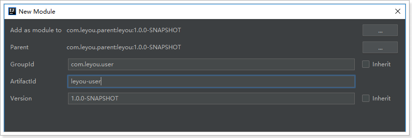
位置：
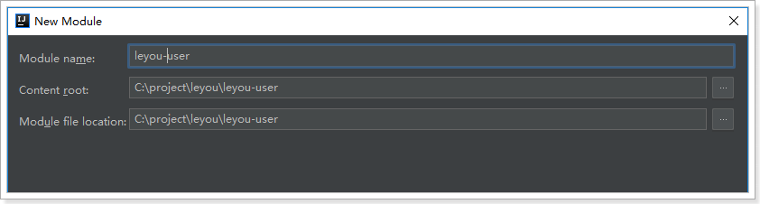
1.2.创建leyou-user-interface
在leyou-user下，创建module：

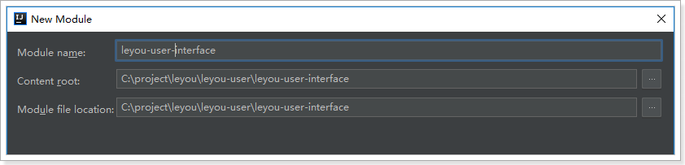
pom：
<?xml version="1.0" encoding="UTF-8"?>
<project xmlns="http://maven.apache.org/POM/4.0.0"
xmlns:xsi="http://www.w3.org/2001/XMLSchema-instance"
xsi:schemaLocation="http://maven.apache.org/POM/4.0.0 http://maven.apache.org/xsd/maven-4.0.0.xsd">
<parent>
<artifactId>leyou-user</artifactId>
<groupId>com.leyou.user</groupId>
<version>1.0.0-SNAPSHOT</version>
</parent>
<modelVersion>4.0.0</modelVersion>
<groupId>com.leyou.user</groupId>
<artifactId>leyou-user-interface</artifactId>
<version>1.0.0-SNAPSHOT</version>
</project>
1.3.创建leyou-user-service
创建module


pom
<?xml version="1.0" encoding="UTF-8"?>
<project xmlns="http://maven.apache.org/POM/4.0.0"
xmlns:xsi="http://www.w3.org/2001/XMLSchema-instance"
xsi:schemaLocation="http://maven.apache.org/POM/4.0.0 http://maven.apache.org/xsd/maven-4.0.0.xsd">
<parent>
<artifactId>leyou-user</artifactId>
<groupId>com.leyou.user</groupId>
<version>1.0.0-SNAPSHOT</version>
</parent>
<modelVersion>4.0.0</modelVersion>
<groupId>com.leyou.user</groupId>
<artifactId>leyou-user-service</artifactId>
<version>1.0.0-SNAPSHOT</version>
<dependencies>
<dependency>
<groupId>org.springframework.boot</groupId>
<artifactId>spring-boot-starter-web</artifactId>
</dependency>
<dependency>
<groupId>org.springframework.cloud</groupId>
<artifactId>spring-cloud-starter-netflix-eureka-client</artifactId>
</dependency>
<dependency>
<groupId>org.springframework.boot</groupId>
<artifactId>spring-boot-starter-jdbc</artifactId>
</dependency>
<!-- mybatis启动器 -->
<dependency>
<groupId>org.mybatis.spring.boot</groupId>
<artifactId>mybatis-spring-boot-starter</artifactId>
</dependency>
<!-- 通用Mapper启动器 -->
<dependency>
<groupId>tk.mybatis</groupId>
<artifactId>mapper-spring-boot-starter</artifactId>
</dependency>
<!-- mysql驱动 -->
<dependency>
<groupId>mysql</groupId>
<artifactId>mysql-connector-java</artifactId>
</dependency>
<dependency>
<groupId>com.leyou.user</groupId>
<artifactId>leyou-user-interface</artifactId>
<version>1.0.0-SNAPSHOT</version>
</dependency>
<dependency>
<groupId>org.springframework.boot</groupId>
<artifactId>spring-boot-starter-test</artifactId>
</dependency>
</dependencies>
</project>
启动类
@SpringBootApplication
@EnableDiscoveryClient
@MapperScan("com.leyou.user.mapper")
public class LeyouUserApplication {
public static void main(String[] args) {
SpringApplication.run(LeyouUserApplication.class, args);
}
}
配置：
server:
port: 8085
spring:
application:
name: user-service
datasource:
url: jdbc:mysql://127.0.0.1:3306/leyou
username: root
password: root
driver-class-name: com.mysql.jdbc.Driver
eureka:
client:
service-url:
defaultZone: http://127.0.0.1:10086/eureka
instance:
lease-renewal-interval-in-seconds: 5
lease-expiration-duration-in-seconds: 15
mybatis:
type-aliases-package: com.leyou.user.pojo
父工程leyou-user的pom：
<?xml version="1.0" encoding="UTF-8"?>
<project xmlns="http://maven.apache.org/POM/4.0.0"
xmlns:xsi="http://www.w3.org/2001/XMLSchema-instance"
xsi:schemaLocation="http://maven.apache.org/POM/4.0.0 http://maven.apache.org/xsd/maven-4.0.0.xsd">
<parent>
<artifactId>leyou</artifactId>
<groupId>com.leyou.parent</groupId>
<version>1.0.0-SNAPSHOT</version>
</parent>
<modelVersion>4.0.0</modelVersion>
<groupId>com.leyou.user</groupId>
<artifactId>leyou-user</artifactId>
<packaging>pom</packaging>
<version>1.0.0-SNAPSHOT</version>
<modules>
<module>leyou-user-interface</module>
<module>leyou-user-service</module>
</modules>
</project>
1.4.添加网关路由
我们修改leyou-gateway，添加路由规则，对leyou-user-service进行路由:

2.后台功能准备
2.1.接口文档
整个用户中心的开发，我们将模拟公司内面向接口的开发。
现在假设项目经理已经设计好了接口文档，详见：《用户中心接口说明.md》

我们将根据文档直接编写后台功能，不关心页面实现。
2.2.数据结构
CREATE TABLE `tb_user` (
`id` bigint(20) NOT NULL AUTO_INCREMENT,
`username` varchar(50) NOT NULL COMMENT '用户名',
`password` varchar(32) NOT NULL COMMENT '密码，加密存储',
`phone` varchar(20) DEFAULT NULL COMMENT '注册手机号',
`created` datetime NOT NULL COMMENT '创建时间',
`salt` varchar(32) NOT NULL COMMENT '密码加密的salt值',
PRIMARY KEY (`id`),
UNIQUE KEY `username` (`username`) USING BTREE
) ENGINE=InnoDB AUTO_INCREMENT=28 DEFAULT CHARSET=utf8 COMMENT='用户表';
数据结构比较简单，因为根据用户名查询的频率较高，所以我们给用户名创建了索引
2.3.基本代码
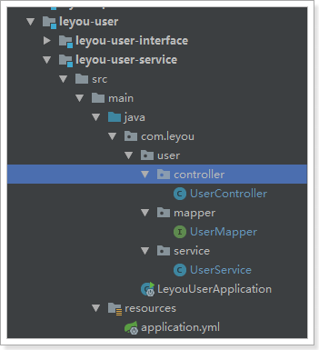
2.3.1.实体类
@Table(name = "tb_user")
public class User {
@Id
@GeneratedValue(strategy = GenerationType.IDENTITY)
private Long id;
private String username;// 用户名
@JsonIgnore
private String password;// 密码
private String phone;// 电话
private Date created;// 创建时间
@JsonIgnore
private String salt;// 密码的盐值
}
注意：为了安全考虑。这里对password和salt添加了注解@JsonIgnore，这样在json序列化时，就不会把password和salt返回。
2.3.2.mapper
public interface UserMapper extends Mapper<User> {
}
2.3.3.Service
@Service
public class UserService {
@Autowired
private UserMapper userMapper;
}
2.3.4.controller
@Controller
public class UserController {
@Autowired
private UserService userService;
}
3.数据验证功能
3.1.接口说明
实现用户数据的校验，主要包括对：手机号、用户名的唯一性校验。
接口路径：
GET /check/{data}/{type}
参数说明：
| 参数 | 说明 | 是否必须 | 数据类型 | 默认值 |
|---|---|---|---|---|
| data | 要校验的数据 | 是 | String | 无 |
| type | 要校验的数据类型：1，用户名；2，手机； | 否 | Integer | 1 |
返回结果：
返回布尔类型结果：
- true：可用
- false：不可用
状态码：
- 200：校验成功
- 400：参数有误
- 500：服务器内部异常
3.2.controller
因为有了接口，我们可以不关心页面，所有需要的东西都一清二楚：
- 请求方式：GET
- 请求路径：/check/{param}/{type}
- 请求参数：param,type
- 返回结果：true或false
/**
* 校验数据是否可用
* @param data
* @param type
* @return
*/
@GetMapping("check/{data}/{type}")
public ResponseEntity<Boolean> checkUserData(@PathVariable("data") String data, @PathVariable(value = "type") Integer type) {
Boolean boo = this.userService.checkData(data, type);
if (boo == null) {
return ResponseEntity.status(HttpStatus.BAD_REQUEST).build();
}
return ResponseEntity.ok(boo);
}
3.3.Service
public Boolean checkData(String data, Integer type) {
User record = new User();
switch (type) {
case 1:
record.setUsername(data);
break;
case 2:
record.setPhone(data);
break;
default:
return null;
}
return this.userMapper.selectCount(record) == 0;
}
3.4.测试
我们在数据库插入一条假数据：
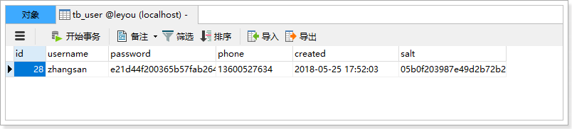
然后在浏览器调用接口，测试：
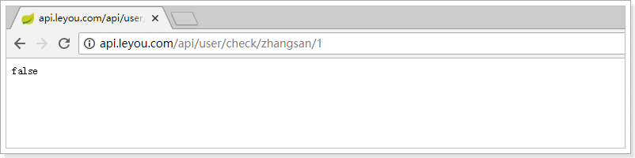
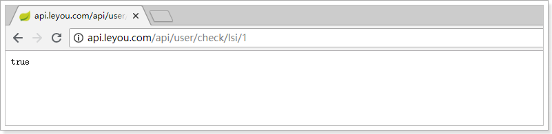
4.阿里大于短信服务
4.1.demo
注册页面上有短信发送的按钮，当用户点击发送短信，我们需要生成验证码，发送给用户。我们将使用阿里提供的阿里大于来实现短信发送。
参考课前资料的《阿里短信.md》学习demo入门
4.2.创建短信微服务
因为系统中不止注册一个地方需要短信发送，因此我们将短信发送抽取为微服务：leyou-sms-service，凡是需要的地方都可以使用。
另外，因为短信发送API调用时长的不确定性，为了提高程序的响应速度，短信发送我们都将采用异步发送方式，即：
- 短信服务监听MQ消息，收到消息后发送短信。
- 其它服务要发送短信时，通过MQ通知短信微服务。
4.2.1.创建module
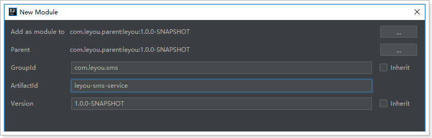

4.2.2.pom
<?xml version="1.0" encoding="UTF-8"?>
<project xmlns="http://maven.apache.org/POM/4.0.0"
xmlns:xsi="http://www.w3.org/2001/XMLSchema-instance"
xsi:schemaLocation="http://maven.apache.org/POM/4.0.0 http://maven.apache.org/xsd/maven-4.0.0.xsd">
<parent>
<artifactId>leyou</artifactId>
<groupId>com.leyou.parent</groupId>
<version>1.0.0-SNAPSHOT</version>
</parent>
<modelVersion>4.0.0</modelVersion>
<groupId>com.leyou.sms</groupId>
<artifactId>leyou-sms-service</artifactId>
<version>1.0.0-SNAPSHOT</version>
<dependencies>
<dependency>
<groupId>org.springframework.boot</groupId>
<artifactId>spring-boot-starter-web</artifactId>
</dependency>
<dependency>
<groupId>org.springframework.boot</groupId>
<artifactId>spring-boot-starter-amqp</artifactId>
</dependency>
<dependency>
<groupId>com.aliyun</groupId>
<artifactId>aliyun-java-sdk-core</artifactId>
<version>3.3.1</version>
</dependency>
<dependency>
<groupId>com.aliyun</groupId>
<artifactId>aliyun-java-sdk-dysmsapi</artifactId>
<version>1.0.0</version>
</dependency>
</dependencies>
</project>
4.2.3.编写启动类
@SpringBootApplication
public class LeyouSmsApplication {
public static void main(String[] args) {
SpringApplication.run(LeyouSmsApplication.class, args);
}
}
4.2.4.编写application.yml
server:
port: 8086
spring:
application:
name: sms-service
rabbitmq:
host: 192.168.56.101
username: leyou
password: leyou
virtual-host: /leyou
4.3.编写短信工具类
项目结构：
4.3.1.属性抽取
我们首先把一些常量抽取到application.yml中：
leyou:
sms:
accessKeyId: JWffwFJIwada # 你自己的accessKeyId
accessKeySecret: aySRliswq8fe7rF9gQyy1Izz4MQ # 你自己的AccessKeySecret
signName: 乐优商城 # 签名名称
verifyCodeTemplate: SMS_133976814 # 模板名称
然后注入到属性类中：
@ConfigurationProperties(prefix = "leyou.sms")
public class SmsProperties {
String accessKeyId;
String accessKeySecret;
String signName;
String verifyCodeTemplate;
public String getAccessKeyId() {
return accessKeyId;
}
public void setAccessKeyId(String accessKeyId) {
this.accessKeyId = accessKeyId;
}
public String getAccessKeySecret() {
return accessKeySecret;
}
public void setAccessKeySecret(String accessKeySecret) {
this.accessKeySecret = accessKeySecret;
}
public String getSignName() {
return signName;
}
public void setSignName(String signName) {
this.signName = signName;
}
public String getVerifyCodeTemplate() {
return verifyCodeTemplate;
}
public void setVerifyCodeTemplate(String verifyCodeTemplate) {
this.verifyCodeTemplate = verifyCodeTemplate;
}
}
4.3.2.工具类
我们把阿里提供的demo进行简化和抽取，封装一个工具类：
@Component
@EnableConfigurationProperties(SmsProperties.class)
public class SmsUtils {
@Autowired
private SmsProperties prop;
//产品名称:云通信短信API产品,开发者无需替换
static final String product = "Dysmsapi";
//产品域名,开发者无需替换
static final String domain = "dysmsapi.aliyuncs.com";
static final Logger logger = LoggerFactory.getLogger(SmsUtils.class);
public SendSmsResponse sendSms(String phone, String code, String signName, String template) throws ClientException {
//可自助调整超时时间
System.setProperty("sun.net.client.defaultConnectTimeout", "10000");
System.setProperty("sun.net.client.defaultReadTimeout", "10000");
//初始化acsClient,暂不支持region化
IClientProfile profile = DefaultProfile.getProfile("cn-hangzhou",
prop.getAccessKeyId(), prop.getAccessKeySecret());
DefaultProfile.addEndpoint("cn-hangzhou", "cn-hangzhou", product, domain);
IAcsClient acsClient = new DefaultAcsClient(profile);
//组装请求对象-具体描述见控制台-文档部分内容
SendSmsRequest request = new SendSmsRequest();
request.setMethod(MethodType.POST);
//必填:待发送手机号
request.setPhoneNumbers(phone);
//必填:短信签名-可在短信控制台中找到
request.setSignName(signName);
//必填:短信模板-可在短信控制台中找到
request.setTemplateCode(template);
//可选:模板中的变量替换JSON串,如模板内容为"亲爱的${name},您的验证码为${code}"时,此处的值为
request.setTemplateParam("{\"code\":\"" + code + "\"}");
//选填-上行短信扩展码(无特殊需求用户请忽略此字段)
//request.setSmsUpExtendCode("90997");
//可选:outId为提供给业务方扩展字段,最终在短信回执消息中将此值带回给调用者
request.setOutId("123456");
//hint 此处可能会抛出异常，注意catch
SendSmsResponse sendSmsResponse = acsClient.getAcsResponse(request);
logger.info("发送短信状态：{}", sendSmsResponse.getCode());
logger.info("发送短信消息：{}", sendSmsResponse.getMessage());
return sendSmsResponse;
}
}
4.4.编写消息监听器
接下来，编写消息监听器，当接收到消息后，我们发送短信。
@Component
@EnableConfigurationProperties(SmsProperties.class)
public class SmsListener {
@Autowired
private SmsUtils smsUtils;
@Autowired
private SmsProperties prop;
@RabbitListener(bindings = @QueueBinding(
value = @Queue(value = "leyou.sms.queue", durable = "true"),
exchange = @Exchange(value = "leyou.sms.exchange",
ignoreDeclarationExceptions = "true"),
key = {"sms.verify.code"}))
public void listenSms(Map<String, String> msg) throws Exception {
if (msg == null || msg.size() <= 0) {
// 放弃处理
return;
}
String phone = msg.get("phone");
String code = msg.get("code");
if (StringUtils.isBlank(phone) || StringUtils.isBlank(code)) {
// 放弃处理
return;
}
// 发送消息
SendSmsResponse resp = this.smsUtils.sendSms(phone, code,
prop.getSignName(),
prop.getVerifyCodeTemplate());
}
}
我们注意到，消息体是一个Map，里面有两个属性：
- phone：电话号码
- code：短信验证码
4.5.启动
启动项目，然后查看RabbitMQ控制台，发现交换机已经创建：
队列也已经创建：
并且绑定：
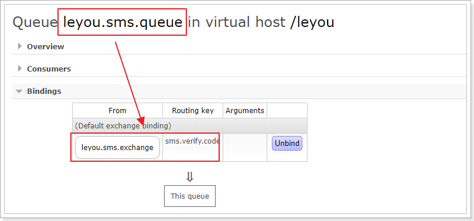
5.发送短信功能
短信微服务已经准备好，我们就可以继续编写用户中心接口了。
5.1.接口说明

这里的业务逻辑是这样的：
- 1）我们接收页面发送来的手机号码
- 2）生成一个随机验证码
- 3）将验证码保存在服务端
- 4）发送短信，将验证码发送到用户手机
那么问题来了：验证码保存在哪里呢？
验证码有一定有效期，一般是5分钟，我们可以利用Redis的过期机制来保存。
5.2.Redis
5.2.1.安装
参考课前资料中的：《centos下的redis安装配置.md》
5.2.2.Spring Data Redis
官网：http://projects.spring.io/spring-data-redis/

Spring Data Redis，是Spring Data 家族的一部分。 对Jedis客户端进行了封装，与spring进行了整合。可以非常方便的来实现redis的配置和操作。
5.2.3.RedisTemplate基本操作
Spring Data Redis 提供了一个工具类：RedisTemplate。里面封装了对于Redis的五种数据结构的各种操作，包括：
- redisTemplate.opsForValue() ：操作字符串
- redisTemplate.opsForHash() ：操作hash
- redisTemplate.opsForList()：操作list
- redisTemplate.opsForSet()：操作set
- redisTemplate.opsForZSet()：操作zset
其它一些通用命令，如expire，可以通过redisTemplate.xx()来直接调用
5种结构：
- String：等同于java中的，
Map<String,String> - list：等同于java中的
Map<String,List<String>> - set：等同于java中的
Map<String,Set<String>> - sort_set：可排序的set
- hash：等同于java中的：`Map<String,Map<String,String>>
5.2.4.StringRedisTemplate
RedisTemplate在创建时，可以指定其泛型类型：
- K：代表key 的数据类型
- V: 代表value的数据类型
注意：这里的类型不是Redis中存储的数据类型，而是Java中的数据类型，RedisTemplate会自动将Java类型转为Redis支持的数据类型：字符串、字节、二进制等等。

不过RedisTemplate默认会采用JDK自带的序列化（Serialize）来对对象进行转换。生成的数据十分庞大，因此一般我们都会指定key和value为String类型，这样就由我们自己把对象序列化为json字符串来存储即可。
因为大部分情况下，我们都会使用key和value都为String的RedisTemplate，因此Spring就默认提供了这样一个实现： 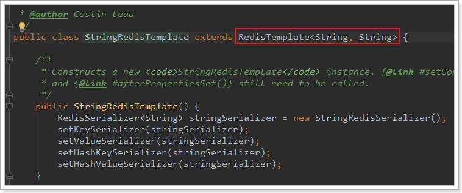
5.2.5.测试
我们在项目中编写一个测试案例，把课前资料中的redisTest.java导入到项目中
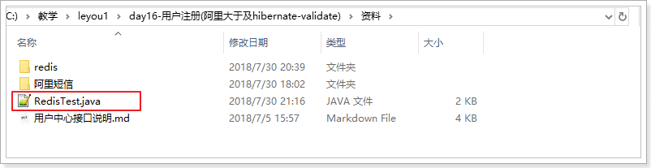
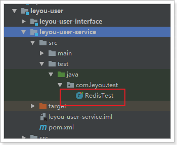
需要在项目中引入Redis启动器：
<dependency>
<groupId>org.springframework.boot</groupId>
<artifactId>spring-boot-starter-data-redis</artifactId>
</dependency>
然后在配置文件中指定Redis地址：
spring:
redis:
host: 192.168.56.101
5.3.在项目中实现
需要三个步骤：
- 生成随机验证码
- 将验证码保存到Redis中，用来在注册的时候验证
- 发送验证码到
leyou-sms-service服务，发送短信
因此，我们需要引入Redis和AMQP：
<dependency>
<groupId>org.springframework.boot</groupId>
<artifactId>spring-boot-starter-data-redis</artifactId>
</dependency>
<dependency>
<groupId>org.springframework.boot</groupId>
<artifactId>spring-boot-starter-amqp</artifactId>
</dependency>
添加RabbitMQ和Redis配置：
spring:
redis:
host: 192.168.56.101
rabbitmq:
host: 192.168.56.101
username: leyou
password: leyou
virtual-host: /leyou
另外还要用到工具类，生成6位随机码，这个我们封装到了leyou-common中，因此需要引入依赖：
<dependency>
<groupId>com.leyou.common</groupId>
<artifactId>leyou-common</artifactId>
<version>${leyou.latest.version}</version>
</dependency>
NumberUtils中有生成随机码的工具方法：
/**
* 生成指定位数的随机数字
* @param len 随机数的位数
* @return 生成的随机数
*/
public static String generateCode(int len){
len = Math.min(len, 8);
int min = Double.valueOf(Math.pow(10, len - 1)).intValue();
int num = new Random().nextInt(
Double.valueOf(Math.pow(10, len + 1)).intValue() - 1) + min;
return String.valueOf(num).substring(0,len);
}
5.3.1.UserController
在leyou-user-service工程中的UserController添加方法：
/**
* 发送手机验证码
* @param phone
* @return
*/
@PostMapping("code")
public ResponseEntity<Void> sendVerifyCode(String phone) {
Boolean boo = this.userService.sendVerifyCode(phone);
if (boo == null || !boo) {
return new ResponseEntity<>(HttpStatus.INTERNAL_SERVER_ERROR);
}
return new ResponseEntity<>(HttpStatus.CREATED);
}
5.3.2.UserService
在Service中添加代码：
@Autowired
private StringRedisTemplate redisTemplate;
@Autowired
private AmqpTemplate amqpTemplate;
static final String KEY_PREFIX = "user:code:phone:";
static final Logger logger = LoggerFactory.getLogger(UserService.class);
public Boolean sendVerifyCode(String phone) {
// 生成验证码
String code = NumberUtils.generateCode(6);
try {
// 发送短信
Map<String, String> msg = new HashMap<>();
msg.put("phone", phone);
msg.put("code", code);
this.amqpTemplate.convertAndSend("leyou.sms.exchange", "sms.verify.code", msg);
// 将code存入redis
this.redisTemplate.opsForValue().set(KEY_PREFIX + phone, code, 5, TimeUnit.MINUTES);
return true;
} catch (Exception e) {
logger.error("发送短信失败。phone：{}， code：{}", phone, code);
return false;
}
}
注意：要设置短信验证码在Redis的缓存时间为5分钟
5.3.3.测试
通过RestClient发送请求试试：
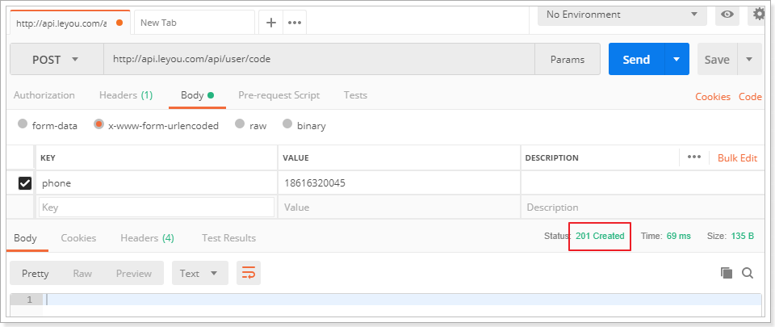
查看Redis中的数据：
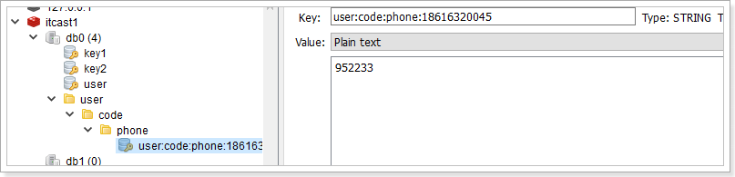
查看短信：
6.注册功能
6.1.接口说明

基本逻辑：
- 1）校验短信验证码
- 2）生成盐
- 3）对密码加密
- 4）写入数据库
- 5）删除Redis中的验证码
6.2.UserController
/**
* 注册
* @param user
* @param code
* @return
*/
@PostMapping("register")
public ResponseEntity<Void> register(User user, @RequestParam("code") String code) {
Boolean boo = this.userService.register(user, code);
if (boo == null || !boo) {
return ResponseEntity.status(HttpStatus.BAD_REQUEST).build();
}
return new ResponseEntity<>(HttpStatus.CREATED);
}
6.3.UserService
public Boolean register(User user, String code) {
// 校验短信验证码
String cacheCode = this.redisTemplate.opsForValue().get(KEY_PREFIX + user.getPhone());
if (!StringUtils.equals(code, cacheCode)) {
return false;
}
// 生成盐
String salt = CodecUtils.generateSalt();
user.setSalt(salt);
// 对密码加密
user.setPassword(CodecUtils.md5Hex(user.getPassword(), salt));
// 强制设置不能指定的参数为null
user.setId(null);
user.setCreated(new Date());
// 添加到数据库
boolean b = this.userMapper.insertSelective(user) == 1;
if(b){
// 注册成功，删除redis中的记录
this.redisTemplate.delete(KEY_PREFIX + user.getPhone());
}
return b;
}
此处使用了课前资料中的CodeUtils：
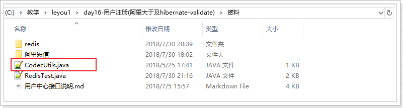
该工具类需要apache加密工具包：
<dependency>
<groupId>commons-codec</groupId>
<artifactId>commons-codec</artifactId>
</dependency>
6.4.测试
我们通过RestClient测试：
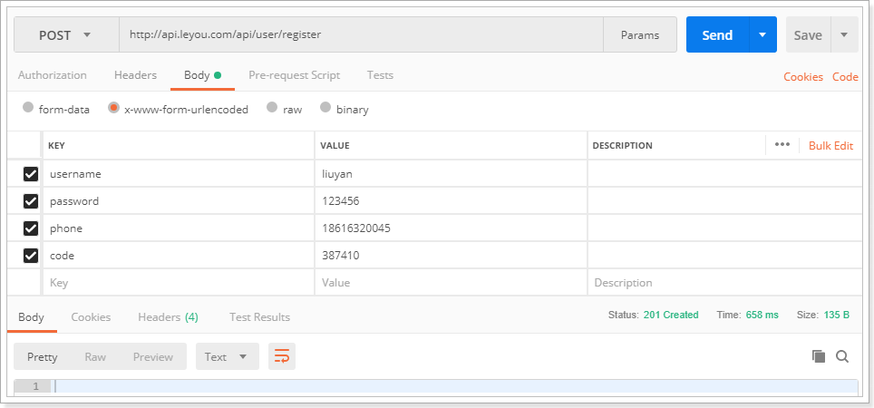
查看数据库：
查看redis中的信息也被删除
6.5.hibernate-validate
刚才虽然实现了注册，但是服务端并没有进行数据校验，而前端的校验是很容易被有心人绕过的。所以我们必须在后台添加数据校验功能：
我们这里会使用Hibernate-Validator框架完成数据校验：
而SpringBoot的web启动器中已经集成了相关依赖：

6.5.1.什么是Hibernate Validator
Hibernate Validator是Hibernate提供的一个开源框架，使用注解方式非常方便的实现服务端的数据校验。
官网：http://hibernate.org/validator/

hibernate Validator 是 Bean Validation 的参考实现 。
Hibernate Validator 提供了 JSR 303 规范中所有内置 constraint（约束） 的实现，除此之外还有一些附加的 constraint。
在日常开发中，Hibernate Validator经常用来验证bean的字段，基于注解，方便快捷高效。
6.5.2.Bean校验的注解
常用注解如下：
| Constraint | 详细信息 |
|---|---|
| @Valid | 被注释的元素是一个对象，需要检查此对象的所有字段值 |
| @Null | 被注释的元素必须为 null |
| @NotNull | 被注释的元素必须不为 null |
| @AssertTrue | 被注释的元素必须为 true |
| @AssertFalse | 被注释的元素必须为 false |
| @Min(value) | 被注释的元素必须是一个数字，其值必须大于等于指定的最小值 |
| @Max(value) | 被注释的元素必须是一个数字，其值必须小于等于指定的最大值 |
| @DecimalMin(value) | 被注释的元素必须是一个数字，其值必须大于等于指定的最小值 |
| @DecimalMax(value) | 被注释的元素必须是一个数字，其值必须小于等于指定的最大值 |
| @Size(max, min) | 被注释的元素的大小必须在指定的范围内 |
| @Digits (integer, fraction) | 被注释的元素必须是一个数字，其值必须在可接受的范围内 |
| @Past | 被注释的元素必须是一个过去的日期 |
| @Future | 被注释的元素必须是一个将来的日期 |
| @Pattern(value) | 被注释的元素必须符合指定的正则表达式 |
| 被注释的元素必须是电子邮箱地址 | |
| @Length | 被注释的字符串的大小必须在指定的范围内 |
| @NotEmpty | 被注释的字符串的必须非空 |
| @Range | 被注释的元素必须在合适的范围内 |
| @NotBlank | 被注释的字符串的必须非空 |
| @URL(protocol=,host=, port=,regexp=, flags=) | 被注释的字符串必须是一个有效的url |
| @CreditCardNumber | 被注释的字符串必须通过Luhn校验算法，银行卡，信用卡等号码一般都用Luhn计算合法性 |
6.5.3.给User添加校验
我们在leyou-user-interface中添加Hibernate-Validator依赖：
<dependency>
<groupId>org.hibernate.validator</groupId>
<artifactId>hibernate-validator</artifactId>
</dependency>
我们在User对象的部分属性上添加注解：
@Table(name = "tb_user")
public class User {
@Id
@GeneratedValue(strategy = GenerationType.IDENTITY)
private Long id;
@Length(min = 4, max = 30, message = "用户名只能在4~30位之间")
private String username;// 用户名
@JsonIgnore
@Length(min = 4, max = 30, message = "密码只能在4~30位之间")
private String password;// 密码
@Pattern(regexp = "^1[35678]\\d{9}$", message = "手机号格式不正确")
private String phone;// 电话
private Date created;// 创建时间
@JsonIgnore
private String salt;// 密码的盐值
}
6.5.4.在controller上进行控制
在controller中改造register方法，只需要给User添加 @Valid注解即可。
6.5.5.测试
我们故意填错：

然后SpringMVC会自动返回错误信息：
7.根据用户名和密码查询用户
功能说明
查询功能，根据参数中的用户名和密码查询指定用户
接口路径
GET /query
参数说明
| 参数 | 说明 | 是否必须 | 数据类型 | 默认值 |
|---|---|---|---|---|
| username | 用户名，格式为4~30位字母、数字、下划线 | 是 | String | 无 |
| password | 用户密码，格式为4~30位字母、数字、下划线 | 是 | String | 无 |
返回结果
用户的json格式数据
{
"id": 6572312,
"username":"test",
"phone":"13688886666",
"created": 1342432424
}
状态码
- 200：注册成功
- 400：用户名或密码错误
- 500：服务器内部异常，注册失败
7.1.controller
/**
* 根据用户名和密码查询用户
* @param username
* @param password
* @return
*/
@GetMapping("query")
public ResponseEntity<User> queryUser(
@RequestParam("username") String username,
@RequestParam("password") String password
) {
User user = this.userService.queryUser(username, password);
if (user == null) {
return ResponseEntity.status(HttpStatus.BAD_REQUEST).build();
}
return ResponseEntity.ok(user);
}
7.2.service
public User queryUser(String username, String password) {
// 查询
User record = new User();
record.setUsername(username);
User user = this.userMapper.selectOne(record);
// 校验用户名
if (user == null) {
return null;
}
// 校验密码
if (!user.getPassword().equals(CodecUtils.md5Hex(password, user.getSalt()))) {
return null;
}
// 用户名密码都正确
return user;
}
要注意，查询时也要对密码进行加密后判断是否一致。
7.3.测试
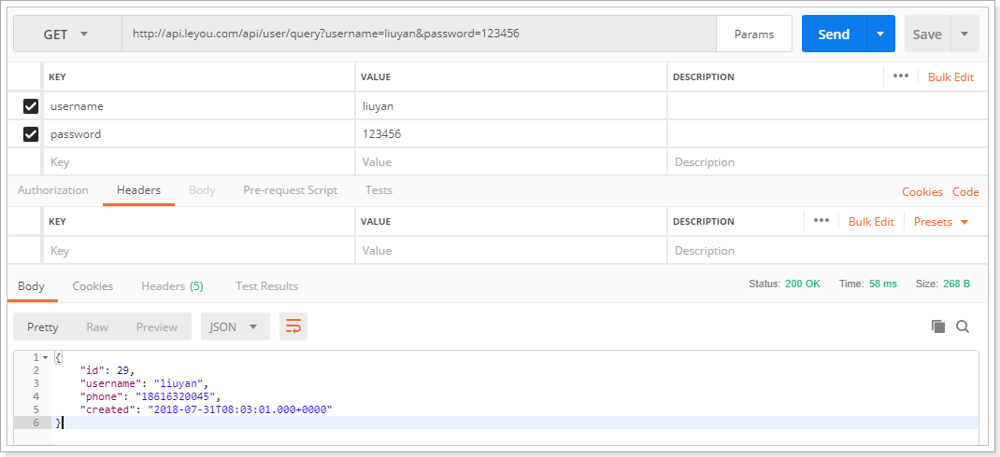
8.在注册页进行测试
在注册页填写信息：
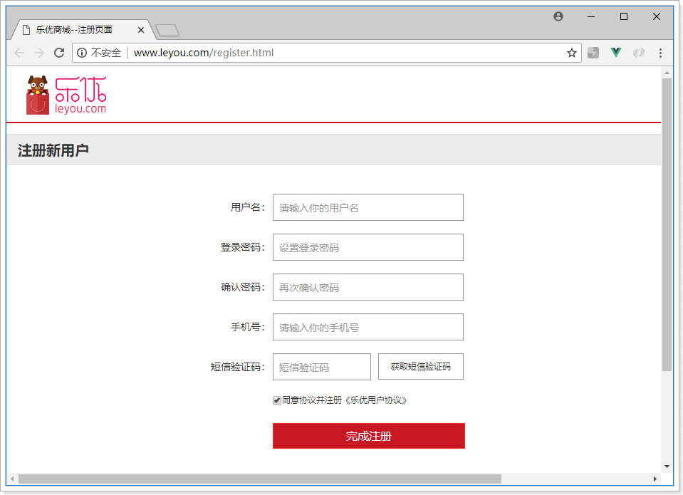
提交发现页面自动跳转到了登录页，查看数据库：
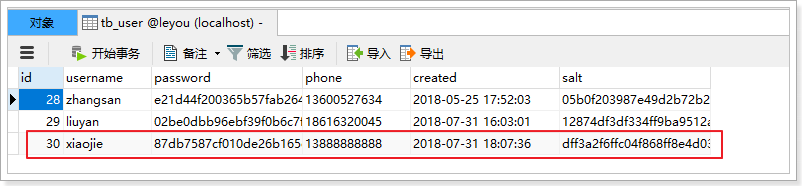